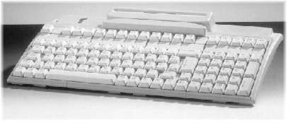

<!DOCTYPE HTML PUBLIC "-//W3C//DTD HTML 4.0 Transitional//EN">
<html xmlns:v="urn:schemas-microsoft-com:vml"
xmlns:o="urn:schemas-microsoft-com:office:office"
xmlns:w="urn:schemas-microsoft-com:office:word"
xmlns:st1="urn:schemas-microsoft-com:office:smarttags"
xmlns="http://www.w3.org/TR/REC-html40">

<head>
<meta http-equiv=Content-Type content="text/html; charset=windows-1252">
<meta name=ProgId content=Word.Document>
<meta name=Generator content="Microsoft Word 10">
<meta name=Originator content="Microsoft Word 10">
<link rel=File-List href="p0_files/filelist.xml">
<link rel=Edit-Time-Data href="p0_files/editdata.mso">
<!--[if !mso]>
<style>
v\:* {behavior:url(#default#VML);}
o\:* {behavior:url(#default#VML);}
w\:* {behavior:url(#default#VML);}
.shape {behavior:url(#default#VML);}
</style>
<![endif]-->
<title>Problem B: The One-Handed Typist</title>
<o:SmartTagType namespaceuri="urn:schemas-microsoft-com:office:smarttags"
 name="place"/>
<o:SmartTagType namespaceuri="urn:schemas-microsoft-com:office:smarttags"
 name="PlaceName"/>
<o:SmartTagType namespaceuri="urn:schemas-microsoft-com:office:smarttags"
 name="PlaceType"/>
<!--[if gte mso 9]><xml>
 <o:DocumentProperties>
  <o:Author>Shahriar Manzoor</o:Author>
  <o:LastAuthor>Shahriar Manzoor</o:LastAuthor>
  <o:Revision>23</o:Revision>
  <o:TotalTime>69</o:TotalTime>
  <o:LastPrinted>2002-10-30T23:30:00Z</o:LastPrinted>
  <o:Created>2002-10-20T16:07:00Z</o:Created>
  <o:LastSaved>2002-10-30T23:37:00Z</o:LastSaved>
  <o:Pages>1</o:Pages>
  <o:Words>358</o:Words>
  <o:Characters>2041</o:Characters>
  <o:Company>BUET</o:Company>
  <o:Lines>17</o:Lines>
  <o:Paragraphs>4</o:Paragraphs>
  <o:CharactersWithSpaces>2395</o:CharactersWithSpaces>
  <o:Version>10.2625</o:Version>
 </o:DocumentProperties>
</xml><![endif]--><!--[if gte mso 9]><xml>
 <w:WordDocument>
  <w:View>Print</w:View>
  <w:Zoom>BestFit</w:Zoom>
  <w:SpellingState>Clean</w:SpellingState>
  <w:GrammarState>Clean</w:GrammarState>
  <w:BrowserLevel>MicrosoftInternetExplorer4</w:BrowserLevel>
 </w:WordDocument>
</xml><![endif]--><!--[if !mso]><object
 classid="clsid:38481807-CA0E-42D2-BF39-B33AF135CC4D" id=ieooui></object>
<style>
st1\:*{behavior:url(#ieooui) }
</style>
<![endif]-->
<style>
<!--
 /* Font Definitions */
 @font-face
	{font-family:"Monotype Corsiva";
	panose-1:3 1 1 1 1 2 1 1 1 1;
	mso-font-charset:0;
	mso-generic-font-family:script;
	mso-font-pitch:variable;
	mso-font-signature:647 0 0 0 159 0;}
 /* Style Definitions */
 p.MsoNormal, li.MsoNormal, div.MsoNormal
	{mso-style-parent:"";
	margin:0in;
	margin-bottom:.0001pt;
	mso-pagination:widow-orphan;
	font-size:12.0pt;
	font-family:"Times New Roman";
	mso-fareast-font-family:"Times New Roman";}
h2
	{mso-margin-top-alt:auto;
	margin-right:0in;
	mso-margin-bottom-alt:auto;
	margin-left:0in;
	mso-pagination:widow-orphan;
	mso-outline-level:2;
	font-size:18.0pt;
	font-family:"Times New Roman";
	font-weight:bold;}
h3
	{mso-margin-top-alt:auto;
	margin-right:0in;
	mso-margin-bottom-alt:auto;
	margin-left:0in;
	mso-pagination:widow-orphan;
	mso-outline-level:3;
	font-size:13.5pt;
	font-family:"Times New Roman";
	font-weight:bold;}
p
	{mso-margin-top-alt:auto;
	margin-right:0in;
	mso-margin-bottom-alt:auto;
	margin-left:0in;
	mso-pagination:widow-orphan;
	font-size:12.0pt;
	font-family:"Times New Roman";
	mso-fareast-font-family:"Times New Roman";}
pre
	{margin:0in;
	margin-bottom:.0001pt;
	mso-pagination:widow-orphan;
	tab-stops:45.8pt 91.6pt 137.4pt 183.2pt 229.0pt 274.8pt 320.6pt 366.4pt 412.2pt 458.0pt 503.8pt 549.6pt 595.4pt 641.2pt 687.0pt 732.8pt;
	font-size:10.0pt;
	font-family:"Courier New";
	mso-fareast-font-family:"Times New Roman";}
tt
	{font-family:"Courier New";
	mso-ascii-font-family:"Courier New";
	mso-fareast-font-family:"Times New Roman";
	mso-hansi-font-family:"Courier New";
	mso-bidi-font-family:"Courier New";}
@page Section1
	{size:595.45pt 841.7pt;
	margin:1.0in 1.0in 1.0in 1.0in;
	mso-header-margin:.5in;
	mso-footer-margin:.5in;
	mso-paper-source:0;}
div.Section1
	{page:Section1;}
 /* List Definitions */
 @list l0
	{mso-list-id:433478609;
	mso-list-template-ids:-531471902;}
@list l0:level1
	{mso-level-tab-stop:.5in;
	mso-level-number-position:left;
	text-indent:-.25in;}
@list l0:level2
	{mso-level-tab-stop:1.0in;
	mso-level-number-position:left;
	text-indent:-.25in;}
@list l0:level3
	{mso-level-tab-stop:1.5in;
	mso-level-number-position:left;
	text-indent:-.25in;}
@list l0:level4
	{mso-level-tab-stop:2.0in;
	mso-level-number-position:left;
	text-indent:-.25in;}
@list l0:level5
	{mso-level-tab-stop:2.5in;
	mso-level-number-position:left;
	text-indent:-.25in;}
@list l0:level6
	{mso-level-tab-stop:3.0in;
	mso-level-number-position:left;
	text-indent:-.25in;}
@list l0:level7
	{mso-level-tab-stop:3.5in;
	mso-level-number-position:left;
	text-indent:-.25in;}
@list l0:level8
	{mso-level-tab-stop:4.0in;
	mso-level-number-position:left;
	text-indent:-.25in;}
@list l0:level9
	{mso-level-tab-stop:4.5in;
	mso-level-number-position:left;
	text-indent:-.25in;}
@list l1
	{mso-list-id:604773215;
	mso-list-template-ids:-586754270;}
ol
	{margin-bottom:0in;}
ul
	{margin-bottom:0in;}
-->
</style>
<!--[if gte mso 10]>
<style>
 /* Style Definitions */
 table.MsoNormalTable
	{mso-style-name:"Table Normal";
	mso-tstyle-rowband-size:0;
	mso-tstyle-colband-size:0;
	mso-style-noshow:yes;
	mso-style-parent:"";
	mso-padding-alt:0in 5.4pt 0in 5.4pt;
	mso-para-margin:0in;
	mso-para-margin-bottom:.0001pt;
	mso-pagination:widow-orphan;
	font-size:10.0pt;
	font-family:"Times New Roman";}
</style>
<![endif]--><!--[if gte mso 9]><xml>
 <o:shapedefaults v:ext="edit" spidmax="15362"/>
</xml><![endif]--><!--[if gte mso 9]><xml>
 <o:shapelayout v:ext="edit">
  <o:idmap v:ext="edit" data="1"/>
 </o:shapelayout></xml><![endif]-->
</head>

<body lang=EN-US style='tab-interval:.5in'>

<div class=Section1>

<h2 align=center style='text-align:center'><span style='mso-bidi-font-weight:
normal'>Problem A</span><span style='mso-bidi-font-size:12.0pt'><br>
</span><span style='font-size:24.0pt;mso-bidi-font-weight:normal'>The
One-Handed Typist</span><span style='mso-bidi-font-size:12.0pt'><br>
</span><span style='font-size:12.0pt;mso-bidi-font-weight:normal'>Input:</span><span
style='font-size:12.0pt'> </span><span style='font-size:12.0pt;font-weight:
normal;mso-bidi-font-weight:bold'>standard input</span><span style='font-size:
12.0pt'><br>
</span><span style='font-size:12.0pt;mso-bidi-font-weight:normal'>Output:</span><span
style='font-size:12.0pt'> </span><span style='font-size:12.0pt;font-weight:
normal;mso-bidi-font-weight:bold'>standard output</span><span style='font-size:
12.0pt'><br>
</span><span style='font-size:12.0pt;mso-bidi-font-weight:normal'>Time Limit:</span><span
style='font-size:12.0pt'> </span><span style='font-size:12.0pt;font-weight:
normal;mso-bidi-font-weight:bold'>6 seconds</span><span style='font-size:12.0pt'><br>
</span><span style='font-size:12.0pt;mso-bidi-font-weight:normal'>Memory Limit:</span><span
style='font-size:12.0pt'> </span><span style='font-size:12.0pt;font-weight:
normal;mso-bidi-font-weight:bold'>32 MB</span><span style='font-size:12.0pt'><o:p></o:p></span></h2>

<p class=MsoNormal style='text-align:justify'><!--[if gte vml 1]><v:shapetype
 id="_x0000_t75" coordsize="21600,21600" o:spt="75" o:preferrelative="t"
 path="m@4@5l@4@11@9@11@9@5xe" filled="f" stroked="f">
 <v:stroke joinstyle="miter"/>
 <v:formulas>
  <v:f eqn="if lineDrawn pixelLineWidth 0"/>
  <v:f eqn="sum @0 1 0"/>
  <v:f eqn="sum 0 0 @1"/>
  <v:f eqn="prod @2 1 2"/>
  <v:f eqn="prod @3 21600 pixelWidth"/>
  <v:f eqn="prod @3 21600 pixelHeight"/>
  <v:f eqn="sum @0 0 1"/>
  <v:f eqn="prod @6 1 2"/>
  <v:f eqn="prod @7 21600 pixelWidth"/>
  <v:f eqn="sum @8 21600 0"/>
  <v:f eqn="prod @7 21600 pixelHeight"/>
  <v:f eqn="sum @10 21600 0"/>
 </v:formulas>
 <v:path o:extrusionok="f" gradientshapeok="t" o:connecttype="rect"/>
 <o:lock v:ext="edit" aspectratio="t"/>
</v:shapetype><v:shape id="_x0000_s1029" type="#_x0000_t75" style='position:absolute;
 left:0;text-align:left;margin-left:162pt;margin-top:8.5pt;width:297pt;
 height:126.45pt;z-index:1'>
 <v:imagedata src="p0_files/image001.gif" o:title=""/>
 <w:wrap type="square"/>
</v:shape><![endif]--><![if !vml]><![endif]>Jimmy
has a job of typing documents for <b style='mso-bidi-font-weight:normal'>ACM</b>
or he rather <em><span style='font-style:normal;mso-bidi-font-style:italic'>had</span></em>
a job until his unfortunate skiing accident. With some of his fingers in a
cast, he is finding it difficult to type as he cannot press all the keys of a
keyboard and hence his job is in danger. </p>

<p style='text-align:justify'>Jimmy has come to you for help. He needs to prove
to his boss that he can still type long words (his boss likes long words
because it makes him look smart). Given a list of fingers (fingers are
identified by integers) that cannot be used (due to his accident), and a list
of words Jimmy can add to his boss's documents to make him look smart, find all
the longest words that Jimmy can type. </p>

<p style='text-align:justify'>Jimmy uses standard fingering, meaning he can
type each of these letters with a finger. The list below shows a finger number
and the characters it can press. </p>

<ol start=1 type=1>
 <li class=MsoNormal style='mso-margin-top-alt:auto;mso-margin-bottom-alt:auto;
     mso-list:l0 level1 lfo3;tab-stops:list .5in'><tt><span style='font-size:
     10.0pt'>qaz</span></tt><span style='mso-spacerun:yes'>     </span>//Means
     finger <b style='mso-bidi-font-weight:normal'>1</b> is used to type <b
     style='mso-bidi-font-weight:normal'>q, a, z</b></li>
 <li class=MsoNormal style='mso-margin-top-alt:auto;mso-margin-bottom-alt:auto;
     mso-list:l0 level1 lfo3;tab-stops:list .5in'><tt><span style='font-size:
     10.0pt'>wsx</span></tt><span style='mso-spacerun:yes'>    </span>//Others
     have same meaning</li>
 <li class=MsoNormal style='mso-margin-top-alt:auto;mso-margin-bottom-alt:auto;
     mso-list:l0 level1 lfo3;tab-stops:list .5in'><tt><span style='font-size:
     10.0pt'>edc</span></tt> </li>
 <li class=MsoNormal style='mso-margin-top-alt:auto;mso-margin-bottom-alt:auto;
     mso-list:l0 level1 lfo3;tab-stops:list .5in'><tt><span style='font-size:
     10.0pt'>rfvtgb</span></tt> </li>
 <li class=MsoNormal style='mso-margin-top-alt:auto;mso-margin-bottom-alt:auto;
     mso-list:l0 level1 lfo3;tab-stops:list .5in'>space </li>
 <li class=MsoNormal style='mso-margin-top-alt:auto;mso-margin-bottom-alt:auto;
     mso-list:l0 level1 lfo3;tab-stops:list .5in'>space </li>
 <li class=MsoNormal style='mso-margin-top-alt:auto;mso-margin-bottom-alt:auto;
     mso-list:l0 level1 lfo3;tab-stops:list .5in'><tt><span style='font-size:
     10.0pt'>yhnujm</span></tt> </li>
 <li class=MsoNormal style='mso-margin-top-alt:auto;mso-margin-bottom-alt:auto;
     mso-list:l0 level1 lfo3;tab-stops:list .5in'><tt><span style='font-size:
     10.0pt'>ik,</span></tt> </li>
 <li class=MsoNormal style='mso-margin-top-alt:auto;mso-margin-bottom-alt:auto;
     mso-list:l0 level1 lfo3;tab-stops:list .5in'><tt><span style='font-size:
     10.0pt'>ol.</span></tt> </li>
 <li class=MsoNormal style='mso-margin-top-alt:auto;mso-margin-bottom-alt:auto;
     mso-list:l0 level1 lfo3;tab-stops:list .5in'><tt><span style='font-size:
     10.0pt'>p;/</span></tt> </li>
</ol>

<h3><span style='font-size:18.0pt'>Input<o:p></o:p></span></h3>

<p class=MsoNormal style='text-align:justify'>Input consists of a number of
descriptions of Jimmy's handicap. Each description begins with two numbers, <em><b
style='mso-bidi-font-weight:normal'><span style='font-style:normal;mso-bidi-font-style:
italic'>F</span></b></em>, the number of fingers that Jimmy cannot use, and <em><b
style='mso-bidi-font-weight:normal'><span style='font-style:normal;mso-bidi-font-style:
italic'>N</span></b></em><b style='mso-bidi-font-weight:normal'><i
style='mso-bidi-font-style:normal'>&lt;</i>= 1000</b>, the number of big words
to consider. </p>

<p style='text-align:justify'>Following are <em><b style='mso-bidi-font-weight:
normal'><span style='font-style:normal;mso-bidi-font-style:italic'>F</span></b></em>
numbers listing the fingers Jimmy cannot use. On a standard (qwerty) keyboard
with standard finger positioning, the fingers are numbered <b style='mso-bidi-font-weight:
normal'>1</b> through <b style='mso-bidi-font-weight:normal'>10</b> from left
to right (that is, left pinky is <b style='mso-bidi-font-weight:normal'>1</b>,
left ring is <b style='mso-bidi-font-weight:normal'>2</b>, ..., left index is <b
style='mso-bidi-font-weight:normal'>4</b>, left thumb is <b style='mso-bidi-font-weight:
normal'>5</b>, right thumb is <b style='mso-bidi-font-weight:normal'>6</b>,
..., right pinky is <b style='mso-bidi-font-weight:normal'>10</b>). </p>

<p style='text-align:justify'>Next are <em><b style='mso-bidi-font-weight:normal'><span
style='font-style:normal;mso-bidi-font-style:italic'>N</span></b></em><b
style='mso-bidi-font-weight:normal'><i style='mso-bidi-font-style:normal'> </i></b>lines,
each containing one word of at most <b style='mso-bidi-font-weight:normal'>50</b>
characters. A word consists of small letters only. Input terminates with end of
file. </p>

<h3 style='text-align:justify'><span style='font-size:18.0pt'>Output<o:p></o:p></span></h3>

<p class=MsoNormal style='text-align:justify'>Output for each case consists of
a number <em><b style='mso-bidi-font-weight:normal'><span style='font-style:
normal;mso-bidi-font-style:italic'>M</span></b></em> indicating the number of
longest words found in the list which Jimmy can type. Following are <em><b
style='mso-bidi-font-weight:normal'><span style='font-style:normal;mso-bidi-font-style:
italic'>M</span></b></em> lines containing the list of longest words Jimmy can
type. The words in the list should be distinct and occur in alphabetical order.
</p>

<h3 style='text-align:justify'><span style='font-size:18.0pt'>Sample Input<o:p></o:p></span></h3>

<pre style='text-align:justify'><span style='font-size:11.0pt'>5 5<o:p></o:p></span></pre><pre
style='text-align:justify'><span style='font-size:11.0pt'>6 7 8 9 10<o:p></o:p></span></pre><pre
style='text-align:justify'><span style='font-size:11.0pt'>the<o:p></o:p></span></pre><pre
style='text-align:justify'><span style='font-size:11.0pt'>stewardesses<o:p></o:p></span></pre><pre
style='text-align:justify'><span style='font-size:11.0pt'>have<o:p></o:p></span></pre><pre
style='text-align:justify'><span style='font-size:11.0pt'>funny<o:p></o:p></span></pre><pre
style='text-align:justify'><span style='font-size:11.0pt'>hair<o:p></o:p></span></pre><pre
style='text-align:justify'><span style='font-size:11.0pt'>3 18<o:p></o:p></span></pre><pre
style='text-align:justify'><span style='font-size:11.0pt'>7 8 9<o:p></o:p></span></pre><pre
style='text-align:justify'><span style='font-size:11.0pt'>wax<o:p></o:p></span></pre><pre
style='text-align:justify'><span style='font-size:11.0pt'>waxed<o:p></o:p></span></pre><pre
style='text-align:justify'><span style='font-size:11.0pt'>waxen<o:p></o:p></span></pre><pre
style='text-align:justify'><span style='font-size:11.0pt'>waxer<o:p></o:p></span></pre><pre
style='text-align:justify'><span style='font-size:11.0pt'>waxers<o:p></o:p></span></pre><pre
style='text-align:justify'><span style='font-size:11.0pt'>waxes<o:p></o:p></span></pre><pre
style='text-align:justify'><span style='font-size:11.0pt'>waxing<o:p></o:p></span></pre><pre
style='text-align:justify'><span style='font-size:11.0pt'>waxy<o:p></o:p></span></pre><pre
style='text-align:justify'><span style='font-size:11.0pt'>we<o:p></o:p></span></pre><pre
style='text-align:justify'><span style='font-size:11.0pt'>wear<o:p></o:p></span></pre><pre
style='text-align:justify'><span style='font-size:11.0pt'>wearable<o:p></o:p></span></pre><pre
style='text-align:justify'><span style='font-size:11.0pt'>wearer<o:p></o:p></span></pre><pre
style='text-align:justify'><span style='font-size:11.0pt'>wearing<o:p></o:p></span></pre><pre
style='text-align:justify'><span style='font-size:11.0pt'>wears<o:p></o:p></span></pre><pre
style='text-align:justify'><span style='font-size:11.0pt'>weave<o:p></o:p></span></pre><pre
style='text-align:justify'><span style='font-size:11.0pt'>weaver<o:p></o:p></span></pre><pre
style='text-align:justify'><span style='font-size:11.0pt'>weaves<o:p></o:p></span></pre><pre
style='text-align:justify'><span style='font-size:11.0pt'>weaving<o:p></o:p></span></pre>

<h3 style='text-align:justify;tab-stops:45.8pt 91.6pt 137.4pt 183.2pt 229.0pt 274.8pt 320.6pt 366.4pt 412.2pt 458.0pt 503.8pt 549.6pt 595.4pt 641.2pt 687.0pt 732.8pt'><span
style='font-size:18.0pt'>Sample Output<o:p></o:p></span></h3>

<pre style='text-align:justify'><span style='font-size:11.0pt'>1<o:p></o:p></span></pre><pre
style='text-align:justify'><span style='font-size:11.0pt'>stewardesses<o:p></o:p></span></pre><pre
style='text-align:justify'><span style='font-size:11.0pt'>4<o:p></o:p></span></pre><pre
style='text-align:justify'><span style='font-size:11.0pt'>waxers<o:p></o:p></span></pre><pre
style='text-align:justify'><span style='font-size:11.0pt'>wearer<o:p></o:p></span></pre><pre
style='text-align:justify'><span style='font-size:11.0pt'>weaver<o:p></o:p></span></pre><pre
style='text-align:justify'><span style='font-size:11.0pt'>weaves<o:p></o:p></span></pre>

<div class=MsoNormal align=center style='text-align:center;tab-stops:45.8pt 91.6pt 137.4pt 183.2pt 229.0pt 274.8pt 320.6pt 366.4pt 412.2pt 458.0pt 503.8pt 549.6pt 595.4pt 641.2pt 687.0pt 732.8pt'>

<hr size=2 width="100%" align=center>

</div>

<p class=MsoNormal style='text-align:justify;tab-stops:45.8pt 91.6pt 137.4pt 183.2pt 229.0pt 274.8pt 320.6pt 366.4pt 412.2pt 458.0pt 503.8pt 549.6pt 595.4pt 641.2pt 687.0pt 732.8pt'><b
style='mso-bidi-font-weight:normal'>(Problem-setter: Richard Kruger, CS Dept, </b><st1:place><st1:PlaceType><b
  style='mso-bidi-font-weight:normal'>University</b></st1:PlaceType><b
 style='mso-bidi-font-weight:normal'> of </b><st1:PlaceName><b
  style='mso-bidi-font-weight:normal'>Alberta</b></st1:PlaceName></st1:place><b
style='mso-bidi-font-weight:normal'>)</b></p>

<pre><o:p>&nbsp;</o:p></pre><pre style='text-align:center'><span
style='font-size:14.0pt;font-family:"Monotype Corsiva";mso-bidi-font-family:
"Times New Roman"'>“If you want to solve five problems you must solve four problems before that.”<o:p></o:p></span></pre></div>

</body>

</html>
